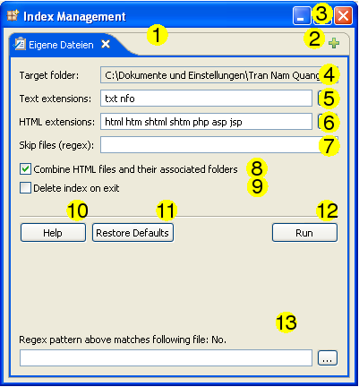

Indexverwaltung

- Tab-Leiste: Zeigt eine Warteschlange der zu indizierenden Ordner.
- Hinzufügen/Entfernen: Sie können die Schaltfläche "Ordner zur Warteschlange hinzufügen" verwenden, um Einträge zur Warteschlange hinzuzufügen und die Schließen-Felder auf den Tabs zum Entfernen von Warteschlangen-Einträgen nutzen. Jeder Eintrag kann gesondert mit den Einstellungen unterhalb der Tab-Leiste konfiguriert werden.
- Dieses Fenster schließen: Klicken auf diese Schaltfläche schließt dieses Fenster und bricht einen evtl. laufenden Indizierungsprozeß ab.
- Zielordner: Der Pfad zu dem Ordner, auf den sich der derzeit angezeigte Warteschlangeneintrag bezieht.
- Text-Datei-Erweiterungen: Die Dateierweiterungen von Dateien, die als einfacher Text indiziert werden sollen, durch Leerzeichen getrennt. Typische Werte sind: c, cpp, log, java, py. Im Fall eines Konfliktes mit bestehenden Datei-Erweiterungen haben die vom Anwender definierten Dateierweiterungen eine höhere Priorität. Um eine Liste mit den verfügbaren Dateierweiterungen unterhalb des derzeitigen Zielordners zu erhalten, klicken Sie auf die Schaltfläche "...".
- HTML-Datei-Erweiterungen: Die Dateierweiterungen von Dateien, die als HTML-Dokumente indiziert werden sollen, durch Leerzeichen getrennt. Diese Einstellung hat eine höhere Priorität als die Anwender-definierten Text-Dateierweiterungen. Um eine Liste mit den verfügbaren Dateierweiterungen unterhalb des derzeitigen Zielordners zu erhalten, klicken Sie auf die Schaltfläche "...".
- Überspringen (Regex): Eine Reihe regulärer Ausdrücke. Jede Datei mit einem Namen, der einem dieser Muster entspricht, wird von der Indizierung ausgenommen. Zum Testen, ob Ihr eingegebenes Muster auf eine spezielle Datei zutrifft, verwenden Sie das in (12) beschriebene Programm. Für weitere Informationen zu regulären Ausdrücken siehe hier.
- HTML-Dateien und ihre zugehörigen Ordner zusammenfassen: Ob HTML-Dateien und ihre zugehörigen Ordner zusammengefasst werden sollen, z. B. wie "foo.html" und ein Ordner im gleichen Verzeichnis mit dem Namen "foo_files". Zu weiteren Informationen siehe hier.
- Index nach Verlassen des Programms löschen: Löscht die Indexdateien für diesen Ordner nach dem Programmende. Dies ermöglicht Ihnen die Erstellung von "Temporär-Indizes". Dieses Konzept steht in Beziehung hierzu.
- Hilfe: Öffnet dieses Dokument in einem Webbrowser.
- Standardwerte: Setzt die Einträge auf die Standardwerte für die Indizierung zurück.
- Start: Mit dieser Schaltfläche teilen Sie DocFetcher mit, dass Sie mit der Konfiguration dieses Warteschlangeneintrags fertig sind und er für die Verarbeitung bereit ist. Beachten Sie, dass diese Schaltfläche nur die 'Start'-Markierung für diesen Eintrag setzt, nicht für die anderen Einträge in der Warteschlange.
- Test des regulären Ausdrucks: Dieses kleine Programm sagt Ihnen, ob das im Feld "Überspringen (Regex)" eingegebene Muster der hier angegebenen Datei entspricht.